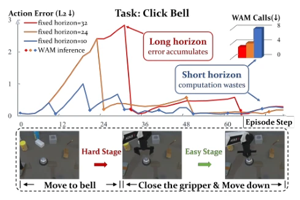
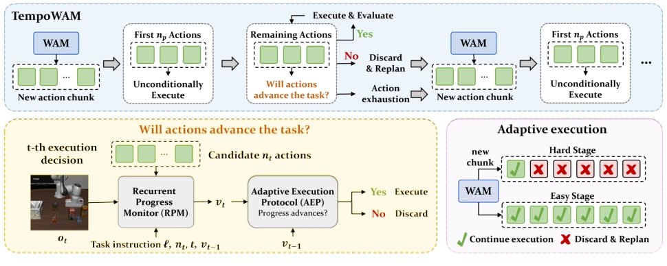
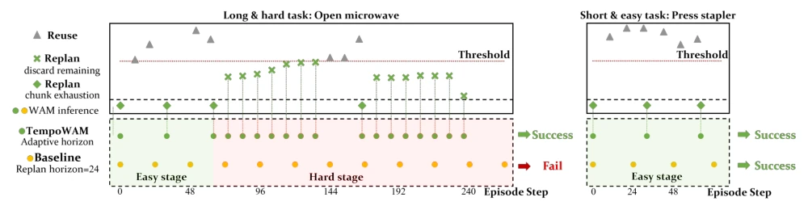
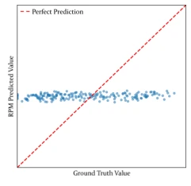
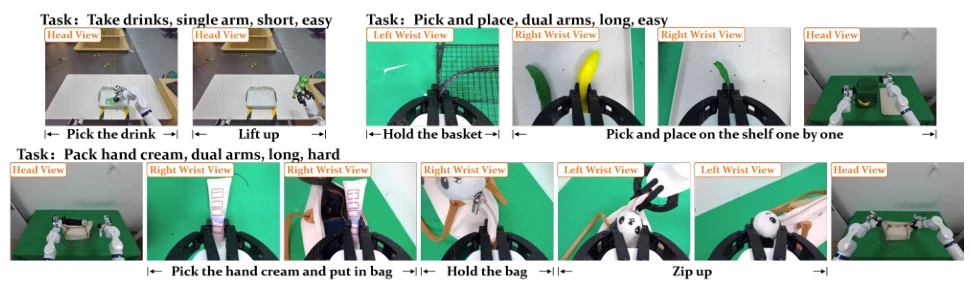

This paper teaches a lesson to robot strategies that rigidly adhere to fixed execution steps: do not assume fewer steps are safer or more steps are more efficient; task difficulty varies, and the threshold for 'reliability' differs vastly. The proposed TempoWAM by the authors is indeed impressive; it does not blindly guess action entropy but directly monitors 'task progress', resembling a workplace veteran who decides whether to restart only after finishing the job. In simple tasks, it dares to be lazy and calculate fewer times; in difficult tasks, it is more alert than anyone. This 'tailoring to the situation' adaptive ability indeed improves the balance between efficiency and success rate. However, this trick is not omnipotent; it strongly relies on the assumption that 'time equals progress'. Once encountering mirror or cyclic tasks, this monitor goes completely blind, as asking the model to guess the progress of 'walking backwards' is simply too much to ask. Additionally, although claimed to be lightweight, adding a monitor means one more calculation; in extreme real-time scenarios, whether this 0.34% overhead is worth it depends on the limits of specific hardware.
研究动机Motivation
现有的World Action Models (WAMs) 在执行时通常采用固定的前缀执行策略，即每次推理后执行固定数量的动作再重规划。然而，这种策略忽略了动作块（chunk）的可靠性是随任务阶段动态变化的：在简单阶段，长步数依然准确；在困难阶段，误差迅速累积。现有的自适应执行方法多依赖动作熵、预测一致性或注意力权重等代理指标（如Liang et al., 2026; Wang et al., 2026a），这些指标无法直接反映任务是否真正取得了进展。例如，一个平滑的动作序列可能毫无进展，而高熵序列却可能正在推进任务。对于WAMs而言，它们同时建模动作和环境演化，因此执行决策应基于剩余动作是否仍在推进任务，而非仅仅基于动作看起来是否合理。因此，亟需一种能直接评估任务进度并据此动态调整执行时长的机制，以解决固定步长与动态执行需求不匹配的问题。
Existing World Action Models (WAMs) typically adopt a fixed prefix execution strategy during execution, meaning a fixed number of actions are executed after each inference before replanning. However, this strategy ignores that the reliability of action chunks (chunk) changes dynamically with task stages: in simple stages, long step counts remain accurate; in difficult stages, errors accumulate rapidly. Existing adaptive execution methods mostly rely on proxy metrics such as action entropy, prediction consistency, or attention weights (e.g., Liang et al., 2026; Wang et al., 2026a), which cannot directly reflect whether the task has truly made progress. For example, a smooth action sequence may make no progress, while a high-entropy sequence may be advancing the task. For WAMs, since they model both actions and environment evolution, execution decisions should be based on whether remaining actions are still advancing the task, rather than merely whether the actions look reasonable. Therefore, there is an urgent need for a mechanism that can directly evaluate task progress and dynamically adjust execution duration based on this, to solve the mismatch problem between fixed step lengths and dynamic execution requirements.

Figure 1: Stage-dependent chunk reliability in Click Bell task of RoboTwin 2.0. We plot the L2 error of action un- der three fixed execution horizons. Chunk reliability varies across execution stages: a long horizon accumulates error in hard stages, while a short horizon remains accurate but triggers unnecessary WAM calls in easy stages where the chunk is still reliable. This mismatch shows that no single fixed horizon fits all stages, motivating adaptive execution.
TempoWAM is a plug-and-play adaptive execution framework, core composed of two modules: Recurrent Progress Monitor (RPM) and Adaptive Execution Protocol (AEP). The overall process is: after WAM generates action chunks, first execute a short prefix unconditionally, then RPM predicts the task progress achievable if executing that candidate prefix based on current observations, task instructions, remaining action candidates, and historical progress. AEP then compares current progress rate with required rate, deciding whether to continue execution or discard remaining actions and replan. The innovation of the RPM module lies in its input fusing visual features (reusing WAM backbone), action prefix encoding (GRU encoding), and historical progress estimation, outputting a 0-1 progress value through a fusion layer. The AEP module introduces dual time-scale calibration factors: offline stage fits task-level calibration factors through demonstration data, online stage dynamically adjusts through Exponential Moving Average (EMA) and success rate gating mechanism to bridge the gap between training and deployment. Training objectives include binary cross-entropy loss, smooth regularization (preventing progress jumps), and history consistency regularization (resisting visual noise). This design allows the system to achieve progress-based adaptive decision-making without modifying the WAM backbone, only through a lightweight monitor.

Figure 2: Overview of TempoWAM. The base WAM generates an action chunk c from the current observation, whose first np actions are executed unconditionally. Each subsequent decision step evaluates the remaining nt = min(np, |crem|) candidate actions: the RPM estimates the task progress that would be reached if they were executed, from the current observation, task instruction, candidate prefix, and execution history; the AEP then decides whether they will advance the task at the required rate. If yes, execution continues; otherwise the remaining actions are discarded and the WAM is triggered for a fresh chunk. TempoWAM adapts the execution horizon online: easy stages run through with few replanning, while hard stages trigger early discard and frequent replanning (bottom right).
The authors conducted extensive tests on RoboTwin 2.0, LIBERO benchmark, and real robot platforms. Baselines include fixed step execution (24 steps/12 steps) and existing adaptive methods (Auto-Horizon, AAC). Results show that TempoWAM reduced WAM inference calls by 26.9% in simple tasks (e.g., click_bell) while maintaining success rate, and increased success rate by 13.3 points in difficult tasks (e.g., open_microwave). On LIBERO, it reduced inference call counts on average. Ablation studies indicate that smooth regularization and history consistency regularization are crucial for performance improvement, and the Teacher Forcing strategy needs balancing to avoid training-testing mismatch. Additionally, the authors demonstrated the failure of time labels when state ambiguity exists through mirror sequence experiments, verifying the model's dependency on visual states rather than simple time counting. Real robot experiments further confirmed its adaptive behavior under tasks of different difficulties.

Figure 4: Adaptive execution behavior on two RoboTwin episodes. Top: the calibrated ratio rt and the decision threshold. Bottom: execution timelines of TempoWAM and the fixed-horizon baseline, with easy and hard stages shaded. Left: on open_microwave, TempoWAM discards the unreliable chunk early at the hard stage and succeeds, while the baseline fails; right: on press_stapler, the chunk remains reliable and TempoWAM reuses it fully to reduce WAM calls.

Figure 6: Time-based labels fail on a mirrored sequence. Ground-truth progress labels and RPM predictions on the palindromic take drinks construction. The predictions are unstructured and uncorrelated with the labels, showing that contradictory supervision from aliased states prevents any usable estimate.
其他图片Other Figures

Figure 3: Real-robot task definitions and visualizations.